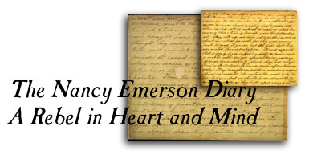
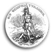

March 6, 1862
Emerson copes with inflation
July 21, 1862
Emerson describes the destruction afforded her farm by hostile soldiers
November 19, 1862
An entry concerning the vast number of Christian converts in the C.S. Army as well as efforts to erect a grave for teenage soldiers

Return to the Women page